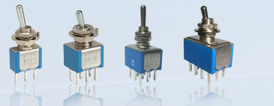
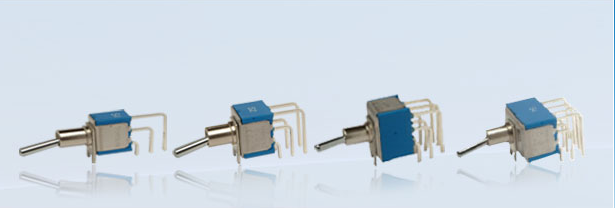
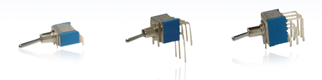
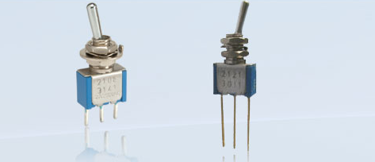

|
Series 20 - Solder Type
Description: Integral (Series 20) Toggle Switches meet the needs of customers wanting a high quality, high current carrying switch in small volume. Standardisation of design in components used from single to four poles, careful choice of materials and attention to details result in reliable and consistent performance. They are available with popular actuator types and sizes. Design variations in the contacts result in all the required switching functions. Only limited types LCSO approved switches to JSS51201 available. |
|  |
Series 20 Pcb Mounting Type Straight PC
Description: Integral (Series 20) Toggle Switches of the PCB mounting type with straight operation meet the needs of customers wanting a high quality, high current carrying switch in small volume. Standardisation of design in components used from single to four poles, careful choice of materials and attention to details result in reliable and consistent performance. They are available with popular actuator types and sizes. Design variations in the contacts result in all the required switching functions. |
|  |
Series 20 Pcb Mounting Type Vertical Operation PCRV
Description: Integral (Series 20) Toggle Switches of the PCB mounting types with vertical operation meet the needs of customers wanting a high quality, high current carrying switch in small volume. Standardisation of design in components used from single to four poles, careful choice of materials and attention to details result in reliable and consistent performance. They are available with popular actuator types and sizes. Design variations in the contacts result in all the required switching functions. Though all the mounting bush options are available, the standard ones are unthreaded type, since the mounting on the PCB is rigid. |
|  |
Series 20 Pcb Mounting Type Horizontal Operation PCR
Description: Integral (Series 20) Toggle Switches of the PCB mounting customers wanting a high quality, high current carrying switch components used from single to three poles, careful choice of materials consistent performance. They are available with popular actuator result in all the required switching functions. Though all the mounting are unthreaded type, since the mounting on the PCB is rigid. |
|  |
Series 20 Special Custom Built Switches
Description: In Series 20 Toggle Switches, modifications are possible to meet customer’s special requirements. A very large number of variations are possible in our standard line of switches due to a wide selection possible in choosing the number of poles, switching function, contact selection, actuator and mounting selection. However sometimes there may be a customer requirement which is not met by any one of the innumerable combination. In such cases Integral can develop samples as per the customer’s drawings. Due to employment of modern production techniques even small number of samples can be made to exact dimension. |